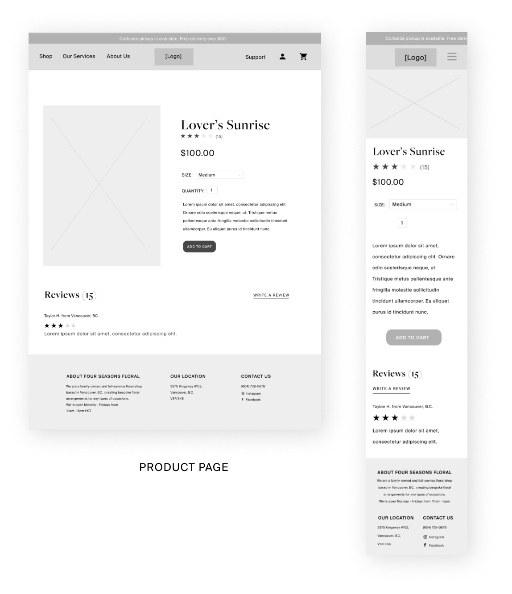
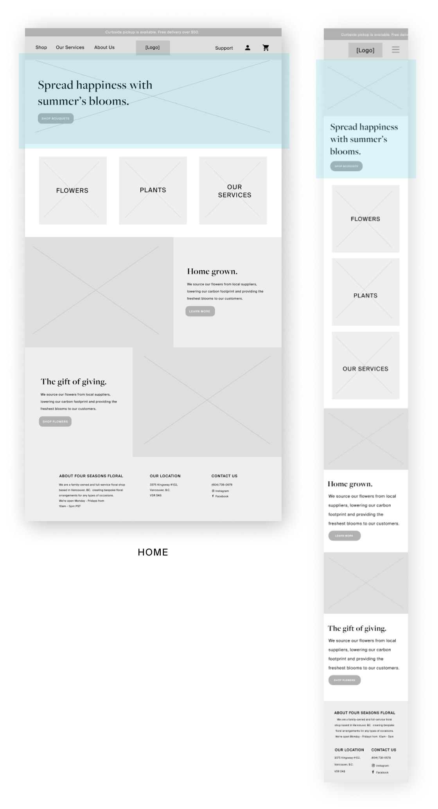
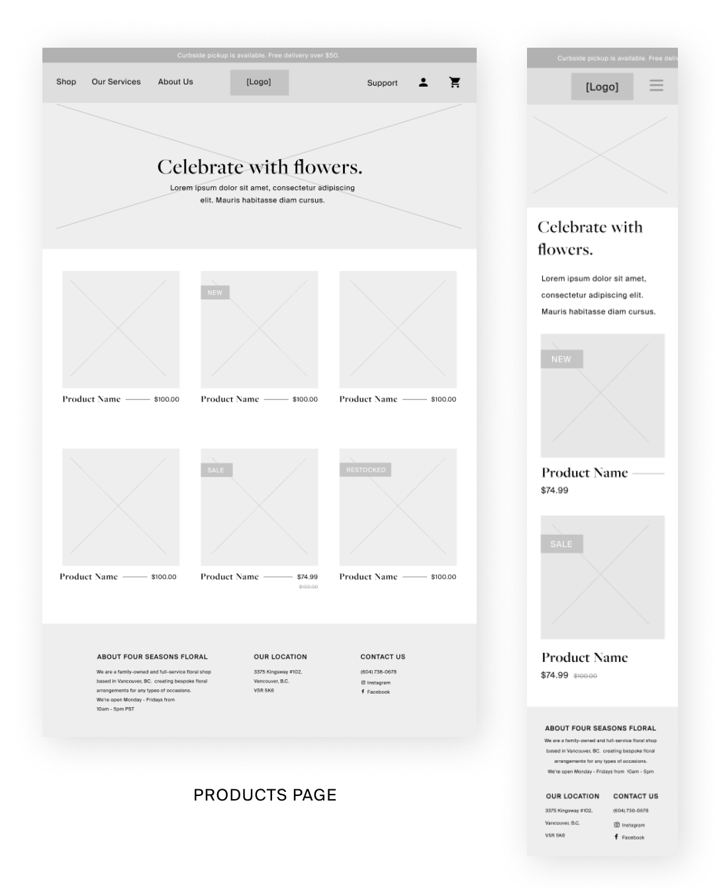

User Tasks
- Learn about what the company values
- Order a bouquet of flowers for a special occasion, like an anniversary
- Order a floral package for a large-scale event, like a wedding
- Find the company's address, operating hours, and contact information
- Find if a user's location is serviced for delivery
- See reviews and be able to leave own reviews
- Be informed of special events or sales
- Be informed of products that are new, on sale, and out of stock
User Flow Wireframes
Learn about what the company values

Order a bouquet of flowers for an anniversary

Order a floral package for a wedding.

Find the company's address, operating hours, and contact information

Find out if my location is serviced for delivery.

View and have the ability to write a product review.

Be informed of special events or sales.

Be informed of products that are new, on sale, and out of stock.

MOCK UP EXAMPLE